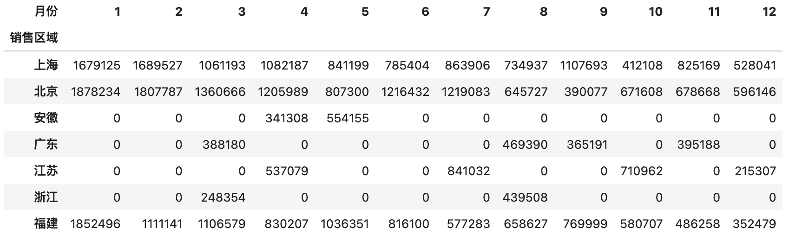

75.深入浅出pandas 4
深入浅出pandas-4
数据透视
经过前面的学习，我们已经将数据准备就绪而且变成了我们想要的样子，接下来就是最为重要的数据透视阶段了。当我们拿到一大堆数据的时候，如何从数据中迅速的解读出有价值的信息，把繁杂的数据变成容易解读的统计图表并再此基础上产生业务洞察，这就是数据分析要解决的核心问题。
获取描述性统计信息
首先，我们可以获取数据的描述性统计信息，通过描述性统计信息，我们可以了解数据的集中趋势和离散趋势。
例如，我们有如下所示的学生成绩表。
scores = np . random . randint ( 50 , 101 , ( 5 , 3 ))
names = ( '关羽' , '张飞' , '赵云' , '马超' , '黄忠' )
courses = ( '语文' , '数学' , '英语' )
df = pd . DataFrame ( data = scores , columns = courses , index = names )
df
输出：
我们可以通过DataFrame对象的方法mean、max、min、std、var等方法分别获取每个学生或每门课程的平均分、最高分、最低分、标准差、方差等信息，也可以直接通过describe方法直接获取描述性统计信息，代码如下所示。
计算每门课程成绩的平均分。
输出：
计算每个学生成绩的平均分。
输出：
计算每门课程成绩的方差。
输出：
说明 ：通过方差可以看出，数学成绩波动最大，两极分化可能更严重。
获取每门课程的描述性统计信息。
输出：
排序和取头部值
如果需要对数据进行排序，可以使用DataFrame对象的sort_values方法，该方法的by参数可以指定根据哪个列或哪些列进行排序，而ascending参数可以指定升序或是降序。例如，下面的代码展示了如何将学生表按语文成绩排降序。
df . sort_values ( by = '语文' , ascending = False )
输出：
如果DataFrame数据量很大，排序将是一个非常耗费时间的操作。有的时候我们只需要获得排前N名或后N名的数据，这个时候其实没有必要对整个数据进行排序，而是直接利用堆结构找出Top-N的数据。DataFrame的nlargest和nsmallest方法就提供对Top-N操作的支持，代码如下所示。
找出语文成绩前3名的学生信息。
输出：
找出数学成绩最低的3名学生的信息。
输出：
分组聚合
我们先从之前使用过的 Excel 文件中读取2020年销售数据，然后再为大家演示如何进行分组聚合操作。
df = pd . read_excel ( 'data/2020年销售数据.xlsx' )
df . head ()
输出：
如果我们要统计每个销售区域的销售总额，可以先通过“售价”和“销售数量”计算出销售额，为DataFrame添加一个列，代码如下所示。
df [ '销售额' ] = df [ '售价' ] * df [ '销售数量' ]
df . head ()
输出：
然后再根据“销售区域”列对数据进行分组，这里我们使用的是DataFrame对象的groupby方法。分组之后，我们取“销售额”这个列在分组内进行求和处理，代码和结果如下所示。
df . groupby ( '销售区域' ) . 销售额 . sum ()
输出：
如果我们要统计每个月的销售总额，我们可以将“销售日期”作为groupby`方法的参数，当然这里需要先将“销售日期”处理成月，代码和结果如下所示。
df . groupby ( df [ '销售日期' ] . dt . month ) . 销售额 . sum ()
输出：
接下来我们将难度升级，统计每个销售区域每个月的销售总额，这又该如何处理呢？事实上，groupby方法的第一个参数可以是一个列表，列表中可以指定多个分组的依据，大家看看下面的代码和输出结果就明白了。
df . groupby ([ '销售区域' , df [ '销售日期' ] . dt . month ]) . 销售额 . sum ()
输出：
如果希望统计出每个区域的销售总额以及每个区域单笔金额的最高和最低，我们可以在DataFrame或Series对象上使用agg方法并指定多个聚合函数，代码和结果如下所示。
df . groupby ( '销售区域' ) . 销售额 . agg ([ 'sum' , 'max' , 'min' ])
输出：
如果希望自定义聚合后的列的名字，可以使用如下所示的方法。
df . groupby ( '销售区域' ) . 销售额 . agg ( 销售总额 = 'sum' , 单笔最高 = 'max' , 单笔最低 = 'min' )
输出：
如果需要对多个列使用不同的聚合函数，例如“统计每个销售区域销售额的总和以及销售数量的最低值和最高值”，我们可以按照下面的方式来操作。
df . groupby ( '销售区域' )[[ '销售额' , '销售数量' ]] . agg ({
'销售额' : 'sum' , '销售数量' : [ 'max' , 'min' ]
})
输出：
透视表和交叉表
上面的例子中，“统计每个销售区域每个月的销售总额”会产生一个看起来很长的结果，在实际工作中我们通常把那些行很多列很少的表成为“窄表”，如果我们不想得到这样的一个“窄表”，可以使用DataFrame的pivot_table方法或者是pivot_table函数来生成透视表。透视表的本质就是对数据进行分组聚合操作，根据 A 列对 B 列进行统计 ，如果大家有使用 Excel 的经验，相信对透视表这个概念一定不会陌生。例如，我们要“统计每个销售区域的销售总额”，那么“销售区域”就是我们的 A 列，而“销售额”就是我们的 B 列，在pivot_table函数中分别对应index和values参数，这两个参数都可以是单个列或者多个列。
pd . pivot_table ( df , index = '销售区域' , values = '销售额' , aggfunc = 'sum' )
输出：
注意 ：上面的结果操作跟之前用groupby的方式得到的结果有一些区别，groupby操作后，如果对单个列进行聚合，得到的结果是一个Series对象，而上面的结果是一个DataFrame 对象。
如果要统计每个销售区域每个月的销售总额，也可以使用pivot_table函数，代码如下所示。
df [ '月份' ] = df [ '销售日期' ] . dt . month
pd . pivot_table ( df , index = [ '销售区域' , '月份' ], values = '销售额' , aggfunc = 'sum' )
上面的操作结果是一个DataFrame，但也是一个长长的“窄表”，如果希望做成一个行比较少列比较多的“宽表”，可以将index参数中的列放到columns参数中，代码如下所示。
pd . pivot_table ( df , index = '销售区域' , columns = '月份' , values = '销售额' , aggfunc = 'sum' , fill_value = 0 )
说明 ：pivot_table函数的fill_value=0会将空值处理为0。
输出：

使用pivot_table函数时，还可以通过添加margins和margins_name参数对分组聚合的结果做一个汇总，具体的操作和效果如下所示。
pd . pivot_table ( df , index = '销售区域' , columns = '月份' , values = '销售额' , aggfunc = 'sum' , fill_value = 0 , margins = True , margins_name = '总计' )
输出：
交叉表就是一种特殊的透视表，它不需要先构造一个DataFrame对象，而是直接通过数组或Series对象指定两个或多个因素进行运算得到统计结果。例如，我们要统计每个销售区域的销售总额，也可以按照如下所示的方式来完成，我们先准备三组数据。
sales_area , sales_month , sales_amount = df [ '销售区域' ], df [ '月份' ], df [ '销售额' ]
使用crosstab函数生成交叉表。
pd . crosstab ( index = sales_area , columns = sales_month , values = sales_amount , aggfunc = 'sum' ) . fillna ( 0 ) . astype ( 'i8' )
说明 ：上面的代码使用了DataFrame对象的fillna方法将空值处理为0，再使用astype方法将数据类型处理成整数。
数据呈现
一图胜千言，我们对数据进行透视的结果，最终要通过图表的方式呈现出来，因为图表具有极强的表现力，能够让我们迅速的解读数据中隐藏的价值。和Series一样，DataFrame对象提供了plot方法来支持绘图，底层仍然是通过matplotlib库实现图表的渲染。关于matplotlib的内容，我们在下一个章节进行详细的探讨，这里我们只简单的讲解plot方法的用法。
例如，我们想通过一张柱状图来比较“每个销售区域的销售总额”，可以直接在透视表上使用plot方法生成柱状图。我们先导入matplotlib.pyplot模块，通过修改绘图的参数使其支持中文显示。
import matplotlib.pyplot as plt
plt . rcParams [ 'font.sans-serif' ] = 'FZJKai-Z03S'
说明 ：上面的FZJKai-Z03S是我电脑上已经安装的一种支持中文的字体的名称，字体的名称可以通过查看用户主目录下.matplotlib文件夹下名为fontlist-v330.json的文件来获得，而这个文件在执行上面的命令后就会生成。
使用魔法指令配置生成矢量图。
% config InlineBackend . figure_format = 'svg'
绘制“每个销售区域销售总额”的柱状图。
temp = pd . pivot_table ( df , index = '销售区域' , values = '销售额' , aggfunc = 'sum' )
temp . plot ( figsize = ( 8 , 4 ), kind = 'bar' )
plt . xticks ( rotation = 0 )
plt . show ()
说明 ：上面的第3行代码会将横轴刻度上的文字旋转到0度，第4行代码会显示图像。
输出：
如果要绘制饼图，可以修改plot方法的kind参数为pie，然后使用定制饼图的参数对图表加以定制，代码如下所示。
temp . sort_values ( by = '销售额' , ascending = False ) . plot (
figsize = ( 6 , 6 ),
kind = 'pie' ,
y = '销售额' ,
ylabel = '' ,
autopct = ' %.2f%% ' ,
pctdistance = 0.8 ,
wedgeprops = dict ( linewidth = 1 , width = 0.35 ),
# 指定每个扇区的边框线宽为1，宽度为0.35
legend = False
)
plt . show ()
输出：
2024年12月15日 19:58:43
2024年12月15日 19:58:43